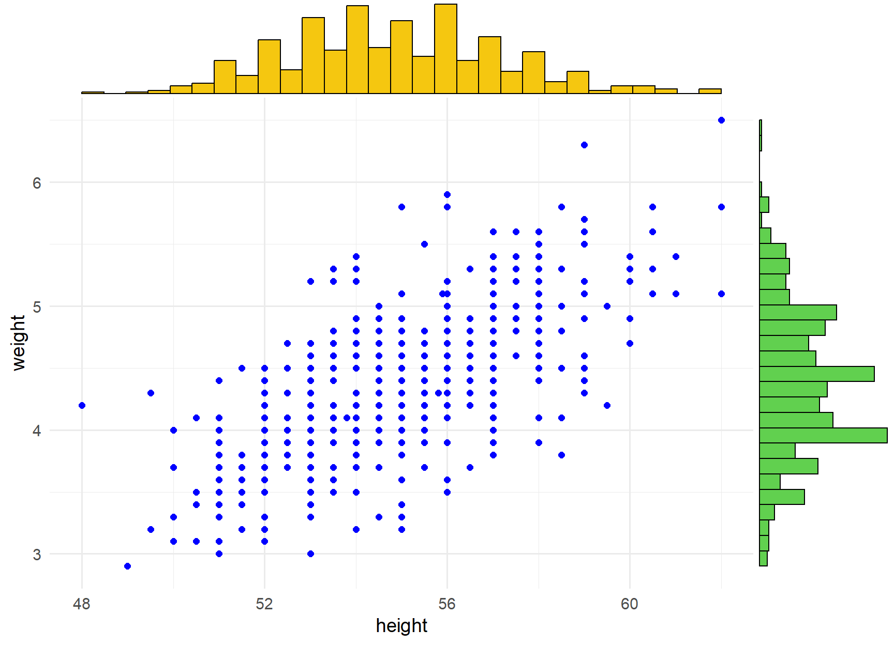

11 Correlation
Correlation is a statistical method used to assess a possible association between two numeric variables, X and Y. There are several statistical coefficients that we can use to quantify correlation depending on the underlying relation of the data. In this chapter, we’ll learn about four correlation coefficients:
Pearson’s \(r\)
Spearman’s \(r_{s}\) and Kendall’s \(\tau\)
Coefficient \(ξ\)
When we have finished this Chapter, we should be able to:
11.1 Research question and Hypothesis Testing
We consider the data in Birthweight dataset. Let’s say that we want to explore the association between weight (in Kg) and height (in cm) for a sample of 550 infants of 1 month age.
11.2 Packages we need
We need to load the following packages:
11.3 Preraring the data
We import the data BirthWeight in R:
library(readxl)
BirthWeight <- read_excel(here("data", "BirthWeight.xlsx"))We inspect the data and the type of variables:
glimpse(BirthWeight)Rows: 550
Columns: 7
$ id <chr> "L001", "L003", "L004", "L005", "L006", "L007", "L008", "L00…
$ weight <dbl> 4.0, 4.6, 4.8, 3.9, 4.6, 3.6, 3.6, 4.5, 5.0, 3.7, 4.2, 4.4, …
$ height <dbl> 55.5, 57.0, 56.0, 56.0, 55.0, 51.5, 56.0, 57.0, 58.5, 52.0, …
$ headc <dbl> 37.5, 38.5, 38.5, 39.0, 39.5, 34.5, 38.0, 39.7, 39.0, 38.0, …
$ gender <chr> "Female", "Female", "Male", "Male", "Male", "Female", "Femal…
$ education <chr> "tertiary", "tertiary", "year12", "tertiary", "year10", "ter…
$ parity <chr> "2 or more siblings", "Singleton", "2 or more siblings", "On…The data set BirthWeight has 550 infants of 1 month age (rows) and includes seven variables (columns). Both the weight and height are numeric (<dbl>) variables.
11.4 Plot the data
A first step that is usually useful in studying the association between two numeric variables is to prepare a scatter plot of the data. The pattern made by the points plotted on the scatter plot usually suggests the basic nature and strength of the association between two variables.
p <- ggplot(BirthWeight, aes(height, weight)) +
geom_point(color = "blue", size = 2) +
theme_minimal(base_size = 14)
ggMarginal(p, type = "histogram",
xparams = list(fill = 7),
yparams = list(fill = 3))
The points in the scatter plot seem to be scattered around an invisible line. The scatter plot also shows that, in general, infants with high height tend to have high weight (positive association).
Additionally, the marginal histograms show that the data are approximately normally distributed (we have a large sample so the graphs are reliable) for both weight and height.
11.5 Correlation between two numeric variables
Correlation coefficients
Pearson’s coefficient measures linear correlation, while the Spearman’s and Kendall’s coefficients compare the ranks of data and measures monotonic associations. These coefficients are very powerful for detecting linear or monotonic associations, respectively. The new \(ξ\) correlation coefficient is more appropriate to measure the strength of non-monotonic associations.
Note that the correlation between variables X and Y is equal to the correlation between variables Y and X so the order of the variables in the functions does not matter. The four correlations coefficients are:
The Pearson’s correlation coefficient can be calculated for any dataset with two numeric variables. However, before we calculate the Pearson’s coefficient we should make sure that the following assumptions are met:
Assumptions for Pearson’s \(r\) coefficient
- The variables are observed on a random sample of individuals (each individual should have a pair of values).
- There is a linear association between the two variables.
- For a valid hypothesis testing and calculation of confidence intervals both variables should have an approximately normal distribution.
- Absence of outliers in the data set.
Pearson’s \(r\) coefficient is a dimensionless quantity that takes a value in the range -1 to +1. A positive value indicates that both variables increase (or decrease) together while a negative coefficient indicates that one variable decreases as the other variable increases and vice versa. The stronger the correlation, the closer the correlation coefficient comes to ±1.
cor(BirthWeight$height, BirthWeight$weight)[1] 0.7127154The basic idea of Spearman’s rank correlation is that the ranks of X and Y are obtained by first separately ordering their values from small to large and then computing the correlation between the two sets of ranks. The strength of correlation is denoted by the coefficient of rank correlation, named Spearman’s rank correlation coefficient, \(r_{s}\).
Assumptions for Spearman’s \(r_{s}\) coefficient
- The variables are observed on a random sample of individuals (each individual should have a pair of values).
- There is a monotonic association between the two variables. In a monotonic association, the variables tend to move in the same relative direction, but not necessarily at a constant rate. So all linear correlations are monotonic but the opposite is not always true, because we can have also monotonic non-linear associations.
Spearman’s \(rho\) coefficient is dimensionless quantity that take value in the range -1 to +1. A positive correlation coefficient indicates that both variables increase (or decrease) in value together and a negative coefficient indicates that one variable decreases in value as the other variable increases and vice versa. The stronger the correlation, the closer the correlation coefficient comes to ±1.
cor(BirthWeight$height, BirthWeight$weight, method = "spearman")[1] 0.7109399The Kendall’s \(\tau\) coefficient is the best alternative to Spearman’s \(rho\) correlation when the sample size is small and has many tied ranks. It is used to test the similarities in the ordering of data when it is ranked by quantities. Kendall’s correlation coefficient uses pairs of observations and determines the strength of association based on the patter on concordance and discordance between the pairs.
Assumptions for Kendall’s \(\tau\) coefficient
- The variables are observed on a random sample of individuals (each individual should have a pair of values).
- There is a monotonic association between the two variables. In a monotonic association, the variables tend to move in the same relative direction, but not necessarily at a constant rate. So all linear correlations are monotonic but the opposite is not always true, because we can have also monotonic non-linear associations.
Kendall’s \(\tau\) coefficient is dimensionless quantity that takes value in the range -1 to +1. A positive correlation coefficient indicates that both variables increase (or decrease) in value together and a negative coefficient indicates that one variable decreases in value as the other variable increases and vice versa. The stronger the correlation, the closer the correlation coefficient comes to ±1.
cor(BirthWeight$height, BirthWeight$weight, method = "kendal")[1] 0.5511955The correlation coefficient \(ξ\) converges to a limit which has an easy interpretation as a measure of dependence. The limit ranges from 0 to 1. It is 1 if and only if Y is a measurable function of X and 0 if and only if X and Y are independent. Thus, \(ξ\) gives an actual measure of the strength of the association and it can be used for non-monotonic associations. However, for monotonic associations, it does not indicate the direction of the association.
Assumptions for \(ξ\) coefficient
- The variables are observed on a random sample of individuals (each individual should have a pair of values).
xicor(BirthWeight$height, BirthWeight$weight)[1] 0.3379234Correlation tests
A correlation test is used to test whether the correlation (denoted ρ) between two numeric variables is significantly different from 0 or not in the population.
Null hypothesis and alternative hypothesis
- \(H_0\): There is no linear association between the two numeric variables (they are independent, \(ρ = 0\))
- \(H_1\): There is linear association between the two numeric variables (they are dependent, \(ρ \neq 0\))
cor.test(BirthWeight$height, BirthWeight$weight) # the default method is "pearson"
Pearson's product-moment correlation
data: BirthWeight$height and BirthWeight$weight
t = 23.785, df = 548, p-value < 2.2e-16
alternative hypothesis: true correlation is not equal to 0
95 percent confidence interval:
0.6689714 0.7515394
sample estimates:
cor
0.7127154 Null hypothesis and alternative hypothesis
- \(H_0\): There is no monotonic association between the two numeric variables (they are independent)
- \(H_1\): There is monotonic association between the two numeric variables (they are dependent)
cor.test(BirthWeight$height, BirthWeight$weight, method = "spearman")Warning in cor.test.default(BirthWeight$height, BirthWeight$weight, method =
"spearman"): Cannot compute exact p-value with ties
Spearman's rank correlation rho
data: BirthWeight$height and BirthWeight$weight
S = 8015368, p-value < 2.2e-16
alternative hypothesis: true rho is not equal to 0
sample estimates:
rho
0.7109399 Null hypothesis and alternative hypothesis
- \(H_0\): There is no monotonic association between the two numeric variables (they are independent)
- \(H_1\): There is monotonic association between the two numeric variables (they are dependent)
cor.test(BirthWeight$height, BirthWeight$weight, method = "kendall")
Kendall's rank correlation tau
data: BirthWeight$height and BirthWeight$weight
z = 18.34, p-value < 2.2e-16
alternative hypothesis: true tau is not equal to 0
sample estimates:
tau
0.5511955 Null hypothesis and alternative hypothesis
- \(H_0\): There is not association between the two numeric variables (they are independent)
- \(H_1\): There is association between the two numeric variables (they are dependent)
xicor(BirthWeight$height, BirthWeight$weight, pvalue = TRUE)$xi
[1] 0.3379234
$sd
[1] 0.02701652
$pval
[1] 0